H3CSE-Security(GB0-550)学习笔记
第二章 Web应用防火墙（WAF)
温馨提示：本文使用的部分图片采用的是设备型号W2000-V300-G2
1. Web安全概述
Web应用已经成为一种普适平台，广泛应用于政务、办公、购物、教学、通讯、媒体等等。
Web安全面临的新挑战，传统的安全防护是通过网络防火墙防80端口之外的攻击，Web攻击专攻80端口；Web安全边界模糊，因此导致网络边界、应用边界、账户权限边界模糊；Web应用系统弱点多样性，不限于CVE，因为开发Web程序的企业太多，弱点不在是固定的表征；黑客攻击门槛低，工具自动化、网上教程多这些也是导致Web安全的主要因素；网站被攻击事件频发，亡羊补牢不如事前防护。
2. WAF产品基础
1）WAF—Web Application Firewall（Web应用防火墙）
WAF是针对Web应用系统采取相应安全监测及防护措施的专用硬件网关类产品，区别于传统防火墙基于五元组进行的访问控制，WAF主要是通过执行丰富和灵活的HTTP/HTTPS或其他相关协议的安全检测策略来对用户的Web应用系统进行深度特征过滤机防护。
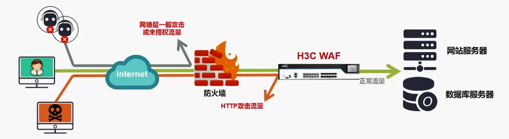
H3C Web应用防火墙（简称H3C WAF）是H3C自主开发、拥有知识产权的新一代的Web安全防护产品。与上一代以代理技术为基础Web应用防火墙不同点主要在于：上一代Web防火墙以研究安全攻击特征为核心，依赖于安全特征匹配技术；新一代Web应用防火墙以用户网站为核心，自动依据网站学习建模，生成基于用户网站的专有安全规则，因此防护更有针对性，误判极低，且性能得到更大的提升。H3C WAF结合多年研发经验，充分考虑Web应用系统可能存在的安全风险，通过对网络层、Web服务层、Web应用程序层、应用内容属性四个层面进行全方位安全分析与防御。
2）功能优势
① 双引擎保护
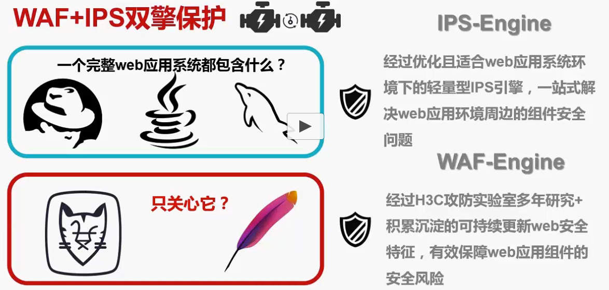
② 支持OWASP-top10安全防护
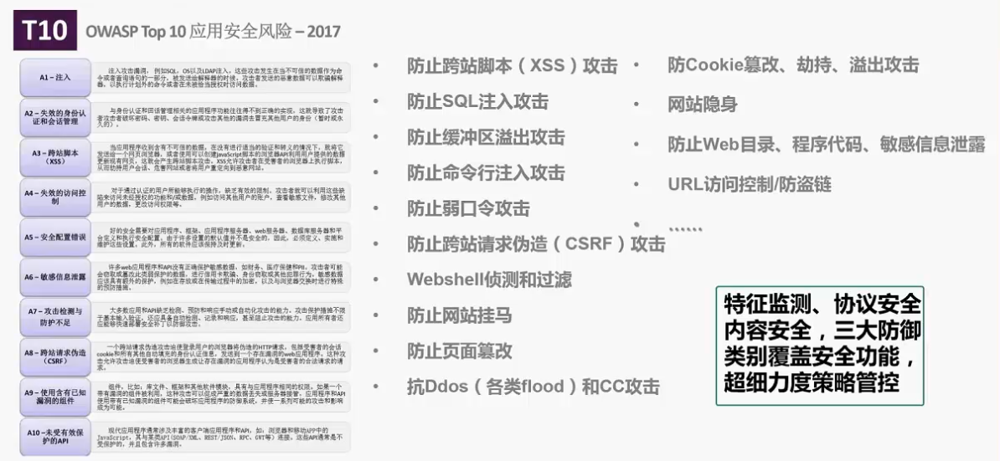
3)WAF系统架构
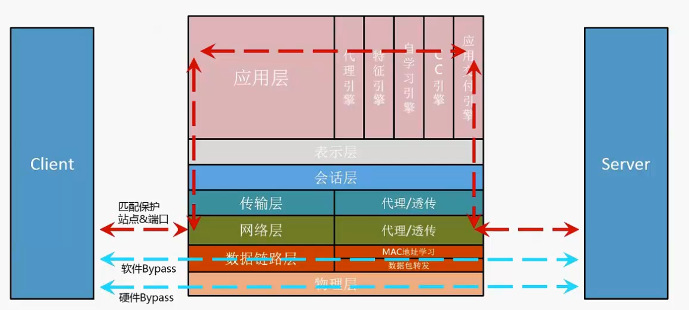
4)H3C WAF产品特点
①防御能力强；
②强大的CC攻击防御能力；
③易用性好；
④安全态势实时告知；
⑤地图动态分析；
⑥IP信誉库；
⑦规则智能适应；
⑧多种防御措施；
⑨部署模式灵活；
⑩多协议支持；
3. WAF设备管理
1）管理口
- 对于ESS6712P02之前的版本：
◎ 在出厂配置下，默认所有接口都属于VLAN 1的Access口，VLAN 1配置有默认IP：192.168.0.1。
◎ 对于如下型号的设备：W2000-AK410、W2000-AK420、W2020-G、W2040-G、W2080-G、W2200-G，建议使用GE0/0口作为管理口，需要使用串口登录，通过命令行修改GE0/0接口为路由口、配置IP，并配置管理网段的路由。
◎ 对于如下型号的设备：W2000-AK430、W2000-AK440、W2010-G，建议使用GE0/7口作为管理口，通过命令行修改GE0/7接口为路由口、配置IP，并配置管理网段的路由。
- 对于ESS6712P02之后的版本：
◎ 在出厂配置下，设置有默认管理口，管理口为路由口，并配置有默认IP：192.168.0.1。
◎ 对于如下型号的设备：W2000-AK410、W2000-AK420、W2020-G、W2040-G、W2080-G、W2200-G，默认管理口为GE0/0接口。
◎ 对于如下型号的设备：W2000-AK430、W2000-AK440、W2010-G，默认管理口为GE0/7接口。
◎如果使用默认管理IP：192.168.0.1，则不需其他配置。如果需要修改管理IP，可以使用串口登录，通过命令行对管理口重新配置IP，并配置管理网段的路由。
2）设备登录
★ Console登录
在设备出厂状态下，或特殊情况时，可通过Console接口登录设备进行管理。默认Console登录用户名：admin ，密码：admin 。默认Console接口的波特率：9600，COM口选择相应的COM端口，其他保持默认设置即可。使用命令行配置管理口的步骤如下：
① 设置管理口为路由模式
set interface GE0/0 mode route
② 设置管理口IP
set interface GE0/0 ip 183.1.0.10/24
③设置管理口的路由
set route 101.1.0.0/16 gw 183.1.0.1
★ Web页面登录
Web管理的具体登录步骤如下：
① 连接设备和PC，用交叉线将PC和设备的管理口相连；
② 为PC配置IP地址，保证能与设备互通修改管理PC的IP地址为192.168.0.0/24（192.168.0.0/24网段内除192.168.0.1的任意地址即可），例如192.168.0.100。
③ 启动浏览器输入登录信息，在浏览器地址栏内输入 https://192.168.0.1 即可进入Web网管登录页面，输入用户名：admin ，密码：admin ,点击<登录>按钮即可进入Web管理页面进行相关操作。
3）导入许可
H3C互联网安全实验室会不断更新Web攻击特征库，以让WAF能根据最新的数据库来检测、阻止病毒和Web攻击。但是各种特征更新都是有使用期限的，其许可证到期后，想要获取最新的特征库更新，则必须更新许可证文件以获得授权，进而继续使用并及时更新特征库。选择“系统维护 > 许可证”页面，可进行许可证的导入。
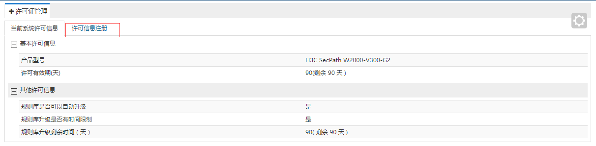
4)升级
▲ 软件版本升级
软件版本升级需要在Web页面进行升级。登录后，点击“系统维护 > 系统更新 > 系统固件”页面，在“更新Firmware”处导入版本升级包，点击应用即可。
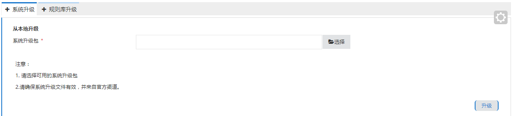
注：由于升级版本会自动重启设备，请在升级前手动保存最新配置，以防配置丢失。更新方式可以设定“立即更新”和“定时更新”
▲ 特征库升级——手动更新
首次更新特征库，可以选择手动更新。点击“系统维护 > 系统更新 > 特征库”，以更新病毒特征库为例，在“更新”一栏点击“手动更新病毒特征库”，并点击应用。IPS特征库、Web攻击特征库的手动更新方法与病毒特征库类似。
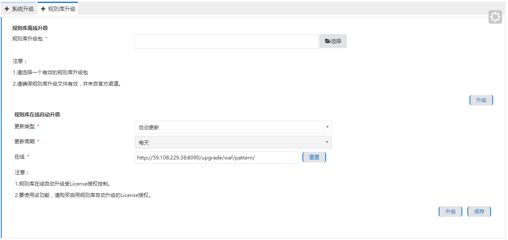
▲ 特征库升级——自动更新
在首次手动更新完特征库后，可以设置系统按照固定的时间间隔或设置每天的某个时刻，连接“H3C更新中心”获取最新的更新信息。勾选“特征库/引擎自动更新”；选择更新间隔。选择“按小时”，可以指定更新间隔为几小时。选择“按日期”，可以指定每天下载更新的时间。如可以输入04:00，系统将在凌晨4点下载更新；点击应用。
注：系统根据域名连接更新中心，因此需要管理员事先设置好能够解析公网域名的DNS服务器，如8.8.8.8等。
4. WAF工作原理及部署方式
WAF部署模式分为：透明模式、反向代理模式、旁路监听/阻断模式、混合模式。
透明模式
透明模式支持Bypass，故障恢复快；不改变原有网络结构，对客户端及服务器是透明的；安全防护能力强；实现即插即用；所有局点开局均推荐使用本模式。
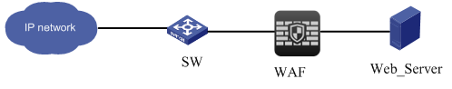
透明模式时，WAF不做代理，将对去往服务器的报文检测完成之后再发送给服务器，从服务器返回的报文同样经过WAF检测再发送给客户端。
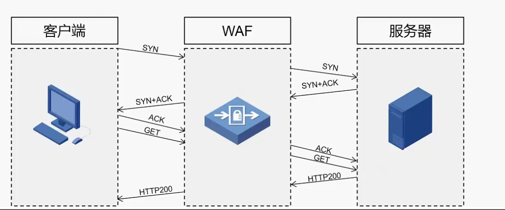
透明模式配置
在“系统配置 > 侦测模式”页面，选择透明模式；
在“网络配置 > 网络接口”页面，配置业务口均为透明模式，接口GE0/1、bond1均为透明模式；
在“网络配置 > 虚拟局域网”页面，将上下行接口加入到VLAN 116中，同房的方法将bond1 加入到116；
在“安全策略 > Web安全策略”页面，根据需要添加或调整Web应用防护策略，系统默认有一条名为default的策略。
在“安全策略 > 策略引用”页面，将添加的Web安全策略与Web服务器进行关联：添加新的引用策略，上联口选择流量入接口GE0/1，选择入侵防护策略和Web安全策略，如default。添加被保护服务器，设置服务IP、端口和域名。
在“安全策略 > 策略引用”页面，将添加的Web安全策略与Web服务器进行关联：启动策略，即可实现对Web服务器的安全防护功能。
注：
☆ 透明部署时，如需要Bypass功能，WAF的进、出口需要选择一对Bypass口；
☆ 各型号设备包含的Bypass口可参照《Web应用防火墙开局指导书》中各个面板示意图的介绍；
☆ 如果设备自身不包含Bypass口，需要搭配插卡进行使用，各个插卡包含Bypass口可参照实际使用的插卡规格说明。
反向代理模式
反向代理模式下，WAF旁路部署在交换机上，所有访问流量经过WAF转发到内网Web服务器上，需要将Web服务器映射到WAF的虚拟IP上，WAF能够完全隐藏Web服务器的真实IP地址，对外只提供Web服务器的虚拟IP，有效保障Web服务器安全。
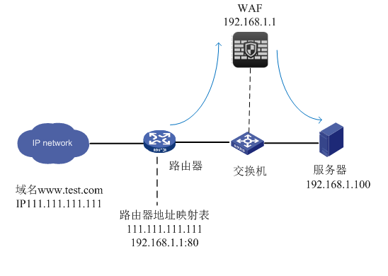
优点：可隐藏后端服务器地址和拓扑结构，防护级别高，可实现攻击阻断；缺点：会改变网络拓扑的逻辑结构，改变路由走向，出现问题时恢复时间较长。
反向代理模式下，WAF会对连接进行代理，客户端先和WAF建立连接，之后再和服务器建立连接。
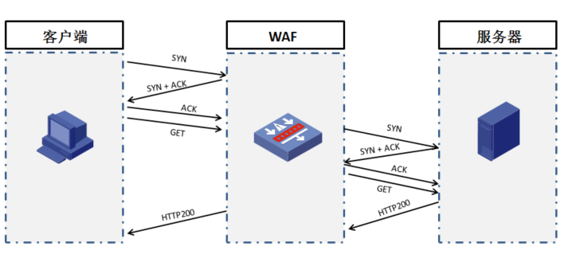
反向代理模式配置
以下图为例
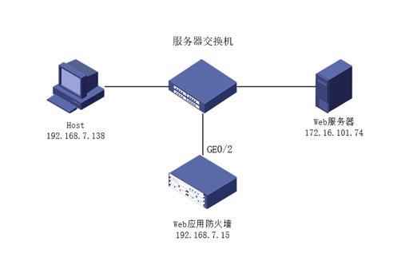
当WAF部署为反向代理模式时，需要将WAF旁路接在业务PC和服务器之间的交换机上，并且需要配置交换机使业务PC网段、以及WAF的代理IP网段都可通。
网络拓扑配置完成后，需要在WAF上进行的配置如下：
⑴ 在“系统配置 > 侦测模式”页面，勾选反向代理模式，点击应用，并在页面右上角点击保存配置，之后需要重启设备以使模式生效。
⑵重启完成后，点击反向代理模式的“配置”按钮，进入配置页面；
⑶首先配置反向代理的业务接口，选择G0/1接口为代理口，选择后点击应用；设置好反代接口，需要配置代理IP和服务器IP的对应关系，在接口下方的服务器设置项点击添加按钮；
⑷在反向代理配置业，设置用于代理的IP地址、子网掩码和代理端口，服务器IP地址端口为真实Web服务器地址和端口，填写完成后点击应用按钮；
⑸在WAF上完成上述配置后，可以再“网络配置 > 网络接口”页面查看配置情况；可以观察到，veth1接口被配置了代理IP，工作模式为路由模式，此时代表反向代理模式配置成功。
说明：
名称为veth1的接口，是WAF本身的一个虚接口，反向代理模式下，配置的代理IP都会关联到该虚接口上。
若配置完反向代理接口地址后，ping不通该地址，可以在“网络接口”页面点击veth1接口，查看其管理访问中的ping方式是否开启。若没有开启，勾选该方式并点击应用，之后再尝试是否能够ping通。
⑹由于系统仅有直连路由和添加的静态路由，因此需要在路由表中添加一条默认路由，使WAF上的业务流量都从反代业务口进出。
⑺最后，需要针对需要防护的服务器配置相关策略，在“安全策略 > 策略引用”中添加一条项目，上联口选择veth0，入侵防护策略、Web安全策略可选择默认策略，服务器安全组中添加防护的服务器，完成后启用该条策略引用项即可。
说明：
由于反代模式下，配置的代理IP被关联到虚接口veth1上，而veth0和veth1是WAF本身的一对虚接口对，流量上代理时，是从veth0虚接口流入的，所以需要将veth0设为上联接口，才会对流量进行规则检测。
服务器安全组中添加的地址为防护服务器的真实地址。
旁路监听/阻断模式
在WAF首次部署或担心部署后产生业务连续性和可用性影响时，可以选择将WAF进行侦测模式旁路部署，通过接收交换机镜像过来的镜像流量来进行流量分析，不会对真实业务流量产生任何阻止动作及性能瓶颈影响，是最快速易用的部署方式。
在充分考虑用户应用场景的情况下，SecPath-WAF还支持旁路阻断功能，可以通过设置专用的阻断端口实现TCPrest功能，在侦测模式下完成威胁流量的防御拦截。
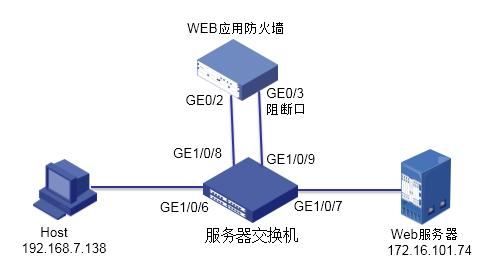
旁路监听/阻断模式配置
⑴在“网络配置 > 网络接口”页面，点击作为阻断口的接口，在设置页面将该接口的模式设为路由模式。
⑵在H3C WAF的“系统配置 > 侦测模式”页面选择旁路监听莫使，并勾选旁路阻断，并选择阻断接口，假设为G0/3，点击应用，并在页面右上角点击保存配置；然后重启系统。
⑶在服务器交换机上创建镜像组，将客户端相连的G1/0/6端口与WAF阻断口相连接的G1/0/9端口设置在同一VLAN中，如vlan 2，并配置网关。。将于Web-server相连的G1/0/8端口设置在另一个VLAN中，如vlan 3，并配置网关。
⑷在“安全策略 > 策略引用”页面添加一条策略引用，上连接口选择镜像口G0/2,入侵防护策略、Web安全策略选择默认策略，服务器安全组添加需要防护的服务器地址（参考反代模式配置），并启用策略。
⑸添加需要防护的服务器的IP/掩码以及协议/端口，点击添加，点击应用，后面就可以进行攻击防护。
混合模式
WAF还可以在透明及混合部署下同时部署使用，使得用户在选择部署方案时更加灵活、便捷。部署方式可以综合参照透明模式和反代模式下的配置。
5. WAF功能介绍及配置
1）监控面板
监控面板通过图标展示了WAF当前的安全概况，界面如图所示：
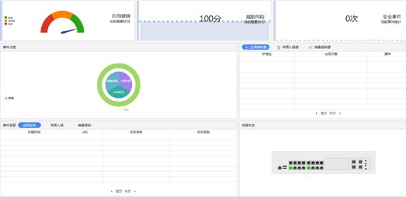
监控面板可以显示：
- 自身健康：根据设备的CPU、内存、硬盘使用率计算出当前设备的健康状态；
- 威胁风险：根据1小时内设所拦截的攻击数目通过加权算法计算出内部网络的风险值；
- 安全事件：1小时内所发现的威胁事件数量展示；
- 事件分类：通过饼状图显示当前一小时内病毒、入侵防御、WAF拦截事件各自所占比例几个字的详细类别；
- 事件告警：显示Web安全、网络入侵、病毒感染的最近日志；
- 事件源：显示Web安全、网络入侵、病毒检测的攻击源，用户直接点击后方的操作可将原地址直接封禁（加入黑名单）或放入例外列表中（加入白名单）；
- 接口状态：显示设备的前面板状态，鼠标悬停至端口会显示该接口名称及协商速率。
2）状态监控
在完成WAF的设置、服务器安全检测策略的创建后，WAF将开始检查通过WAF的网络流量并在状态监控中显示各种详细的系统信息和流量检测信息。管理员可以查看下列信息：
★ 系统状态：查看设备系统相关信息及接口流量信息；
★ Web安全：查看并展示针对Web服务器的各种拦截情况；
★ 入侵防护：查看并展示入侵防御引擎的工作状况；
★ 流量统计：显示统计的Web服务器的访问数及攻击数。
① 系统状态
系统状态分为系统信息及网络信息，用于显示系统当前的资源使用率及工作状态。
选择“系统状态 > 系统信息”，右侧页面显示当前引擎和特征库版本许可信息和历史的CPU使用的统计数据。如下图所示。
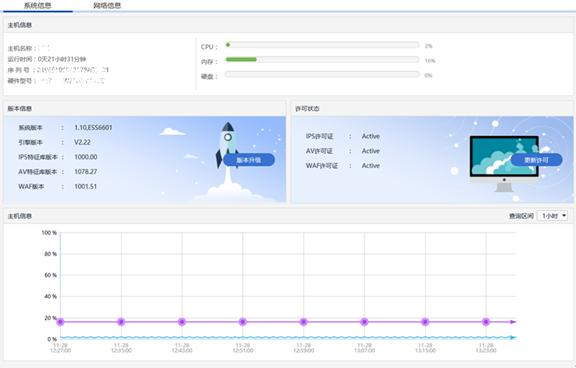
点击版本信息中的版本升级及许可状态中的更新许可，可跳转到系统更新及许可证界面进行更新导入。
在“主机信息”下方，以图表方式显示CPU/内存使用信息。如果超长时间处于高CPU使用状态，请管理员查找具体原因。
管理员可以在“时间间隔”处选择显示的统计数据时间间隔：可选项及含义分别为：
※ 5分钟：选择后界面将直接显示当前时刻之前5分钟的统计信息。
※ 一小时：选择后界面将直接显示当前时刻之前的一个小时内的统计信息。
※ 一天：选择后界面将直接当前时刻之前24小时的统计信息。
※ 一个月：选择后界面将直接当前时刻之前一个月的统计信息。选择菜单“系统状态 > 网络信息”，页面显示所有接口的详细统计信息。如下图所示。
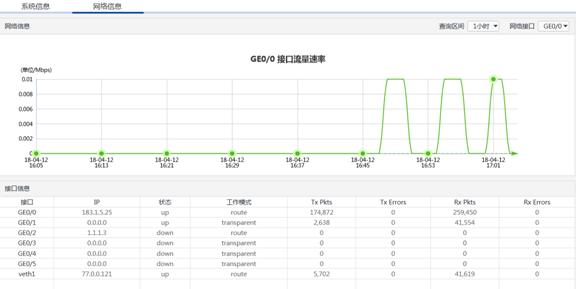
各列说明如下表：
表2-1 接口信息表
| 参数 | 说明 |
|---|---|
| 接口 | 显示接口名称。 |
| IP 地址 | 显示分配给接口的IP地址。如果接口工作在交换模式，则显示为0.0.0.0。 |
| 状态 | 显示接口网卡工作是否正常：“up”或“down”。
说明： 就vlan1接口来说，vlan1是伪接口，受到以透明模式配置的所有接口的限制。如果所有透明模式接口都处于断开状态，那么vlan1也将处于断开状态。如果任一个透明模式接口处于连接状态，那么vlan1也将处于连接状态。 |
| 工作模式 | 显示接口工作模式：“route” “transparent” “bond”。 |
| Rx Pkts | 在接口上接收到的数据包的总数。 |
| Rx Errors | 在接口上接收到的错误包的总数。 |
| Tx Pkts | 通过接口发送的数据包的总数。 |
| Tx Errors | 通过接口发送的错误包的总数。 |
② Web安全
管理员可以在此处查看日志中记录的关于Web服务器受到的攻击防护的统计信息。选择 状态监控 > Web安全，在下级菜单下管理员可以查看到详尽的统计信息，包括如下内容：
攻击统计：显示区域时间内设备拦截的攻击数以及攻击类别和源排名等信息。
会话信息：页面显示过去单位时间内通过设备的HTTP会话并行和新建详细统计信息。
Web威胁：显示挂马、Web shell、信息泄漏等安全时间的统计。
Web缓存：管理员在此可以实时监控被保护的服务器上所有被监控的文件类型。
实时监测：显示当前实时发生的日志。
Web安全——攻击统计
选择菜单Web安全 > 攻击统计，页面显示过去一小时内设备所检测的的威胁风险。如下图所示。
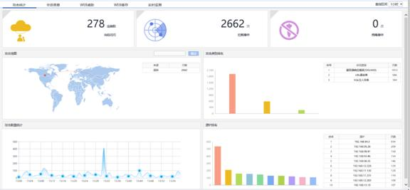
∴ 界面上方显示了当前1小时的连接数及安全WAF设备拦截的针对Web服务器的攻击及病毒数量。
∴ 攻击地图通过用户手工输入本地公网IP地址定位安全网关的位置后，查询1小时内的攻击统计，在地图中标注出威胁的源地址。
∴ 下方通过填充线形图展示出一小时内发生的攻击次数，帮助管理员了解网络威胁风险发生的高峰时间。
∴ 右侧通过柱状图显示1小时内攻击类型和攻击源地址的top10。
Web安全——会话信息
选择菜单 Web安全 > 会话信息，页面显示过去1小时内通过设备的HTTP会话并行和新建详细统计信息。如下图所示。
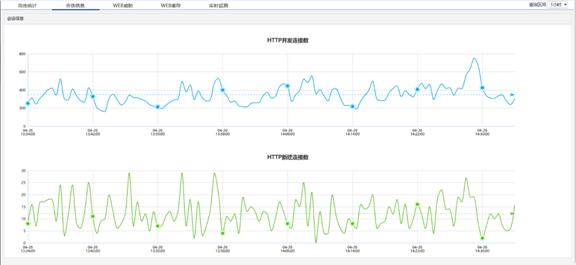
Web安全——Web威胁
选择菜单Web安全 > Web威胁可查看对WAF保护的网站进行挂马监测、Web SHELL监测及信息泄露监测的结果。如下图所示。
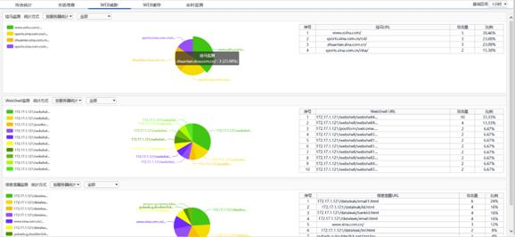
注意：
“信息泄露监测”统计的是WEB安全策略中“数据防泄漏”相应的攻击信息。
Web安全——Web缓存
管理员在此可以实时监控被保护的服务器上所有被监控的文件类型是否被篡改，还可以分别将设备缓存的文件、最近一个检查周期获取的服务器文件下载到管理员主机上。如果管理员可以判断被篡改文件是合法修改的，可以通过执行同步来更新缓存中的文件，使得用户能够访问最新的文件。
(1)选择“Web安全 > Web缓存”，管理员可以查看到所有缓存文件的记录。红色背景显示的记录表示缓存文件的修改时间与设备最新获取的服务器文件的修改时间不一致，提示该页面可能已被篡改。
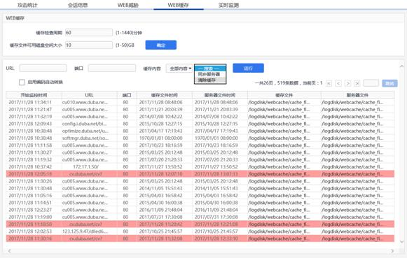
如果显示的信息中有乱码信息，可以尝试点击“启动编码自动转换”，如果还有乱码，可以在浏览器的菜单栏中选择“查看 > 编码”，选择合适的编码信息。
“总页数”处显示当前信息的总共页数，“页号”显示当前为第几页。管理员可以点击翻页按钮进行查看，也可以在“页号”处输入页码，点击“翻到”可以直接跳转至指定的页面。
(2)配置Web缓存，在“缓存检查周期”处设置系统每隔多长时间对缓存进行一次检查。在“缓存文件可用磁盘空间大小”处设置系统预留给Web缓存的磁盘空间大小，单位为GB，可设置范围为1-50。
(3)查询监控信息，管理员可以在上方“URL”处输入一个或多个查询条件，并选择“搜索”，点击“运行”按钮查询符合条件的监控信息。
(4)和最新获取的服务器文件同步，如果管理员可以判断被篡改文件是合法修改的，则可以通过执行同步，将设备缓存中的Web页面替换为最近一个检查周期获取的服务器页面。在“URL”处输入查询条件，然后选择“同步服务器”，之后点击“运行”按钮则会用设备最近一个检查周期获取的服务器文件替换设备缓存中的文件。如果直接选择“篡改内容”并选择“同步服务器”，之后点击“运行”按钮则会用对应的服务器文件替换所有被篡改的文件。同步成功会弹出下图所示的提示框。
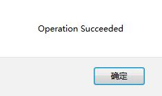
(5)清除缓存信息，如果管理员删除了Web server上的某些页面，网站管理员就需要做清除缓存的操作，以便和服务器保持一致。输入查询条件，下拉菜单选择“清除缓存”，可以将WAF设备的缓存中保存的符合条件的Web页面删除。
(6)下载缓存文件，点击某一条监控记录的“缓存文件”一栏对应的URL链接，可以将WAF设备上缓存的Web页面保存至管理员PC上。
(7)下载服务器文件，点击“服务器文件”一栏对应的URL链接，可以将WAF设备在最近一个检查周期获取的Web服务器的文件保存至管理员PC上。
注意：
反向代理模式下，WAF按周期检查服务器缓存文件时，会产生客户端IP为代理IP的访问日志，并且如果开启了自学习，也会学习到这些流量的信息。
Web安全——实时监控
选择菜单Web安全 > 实时监测可查看到当前1小时内最新的25条日志，方便在发生误判或攻击时，及时定位问题。界面如下：
3) 安全策略
介绍制定Web服务器的防护策略。首选需要定义安全策略，设置需要检测的攻击类型以及具体的检测参数，然后引用策略添加需要保护的服务器组，即对一组Web服务器的安全保护策略，通过在策略中需要定义受保护的Web服务器群组，并引用适当的安全策略，从而实现对不同服务器可定制不同的保护策略。
主要内容包括：
- 策略引用：引用WAF和IPS的策略，设置受保护服务器组。
- Web安全策略：配置Web应用安全策略。
- 入侵防护策略：配置入侵防护相关策略。
- Web漏洞扫描：管理员可以制定扫描任务，系统就会根据配置进行扫描，并生成扫描报告。扫描报告支持管理员在线查看、导出、订阅。
- 自学习：配置如何启用或禁用自学习模式，如何进行相关的配置，以及查看自学习的结果。
- 防DDOS/CC攻击：配置是否启用HTTP请求限制、TCP包攻击检测、UDP包攻击检测和ICMP包攻击检测。
- 全局黑白名单：配置对Web服务器IP访问进行限制。
- 动态攻击黑名单：配置主要对具有疑似攻击行为的IP进行二次的评定。
- Web shell监测：配置是否检查服务器中被植入了Web shell代码。
安全策略——策略引用
点击安全策略 > 策略引用进入界面，该界面用于应用配置完成的Web应用安全策略及入侵防御策略，界面如下：
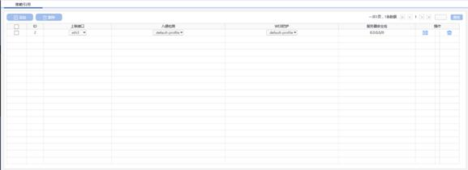
≯ 上联接口：当部署为透明代理模式时，选择流量的入接口；当部署为反向代理模式时，选择veth0；
≯ 当部署为旁路监听模式时，选择流量的镜像口；
≯ 入侵防护策略：可以选择内置的或用户自定义的入侵防护策略；
≯ Web可以选择内置的或用户自定义的Web安全策略；
≯ 服务器安全组：添加需要保护的服务器或虚拟主机域名。
注：设置完上述各项后，需要开启该策略引用项，此此时策略才生效。
管理员可以添加、修改和删除规则引用，具体步骤为：
(1) 添加规则，点击“添加”按钮，会自动出现一条规则，管理员需要为该条规则选择上联接口（非信任接口）和IPS与WAF策略，且点击服务器安全组下方的图标添加需要防护的服务器列表。
(2)编辑服务器群组，在“服务器列表”处配置需要受保护的Web服务器和FTP服务器的IP地址及子网掩码，以及服务器使用的协议类型及端口号。如下图所示。
在“IP/掩码”处设置Web服务器或FTP服务器的IP地址及其子网掩码（支持IPV4和IPV6格式的地址），并选择服务器需要进行检测的协议，及其使用的端口号，然后点击“添加”按钮即可。
点击“删除”下的按钮一栏对应的按钮可以删除该表项。
当Web服务器上存在虚拟主机时，需要在“虚拟主机域名列表”处设定保护的Web服务器的IP地址、域名、协议及端口号之间的对应关系。如下图所示。
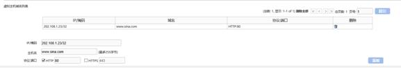
在“IP/掩码”处设置Web服务器的IP地址及其子网掩码，支持IPV4和IPV6格式的地址，在“域名”处输入Web服务器的域名，并在“协议端口”处选择Web服务器使用的协议及其端口号，然后点击“添加”按钮即可。
点击“删除”一栏对应的按钮可以删除该表项。
注：编辑完服务器安全组后，需要点击此页面下方的“应用”按钮才生效。
(3)启用安全规则，点击操作中的“)”启动该条规则，点击“”暂停该条规则。
提醒：
当前，流量如果从上联接口进入WAF，会进行规则检测，之后会从上往下匹配服务器安全组，匹配上后则按照该条策略引用中设置的入侵防护策略和WEB安全策略进行检测。
- 此处添加的IP地址，无论是透明部署模式还是反向代理模式，，都是指真实服务器的IP。
- 虚拟主机域名作用：如受保护的服务器IP对应多个域名，且实际需要对其中部分域名的流量进行策略检查，此时可只在虚拟主机域名中添加相关域名。
注：反代模式下，添加虚拟主机域名时，域名映射的IP应该是该服务器的代理IP。
安全策略——Web安全策略
Web安全策略用于设置一系列安全配置文件，在不同的文件中可以设置不同的检测策略：可以检测不同的攻击类型，并对每一种攻击类型设置不同的检测参数。然后在不同的规则中引用不同的安全策略，从而对不同的服务器组提供不同的安全保护方案。
选择“安全策略 > Web安全策略”，可以对Web安全策略进行设置；WAF自带一条名称为default-profile的默认Web安全策略，该策略选项动作全部为仅记录日志，不进行阻断；该策略用于用户初次上线，只检测不阻断的工作方式，待运行一段时间后，基于日志分析启用安全策略；该策略可以在策略引用中进行引用操作；
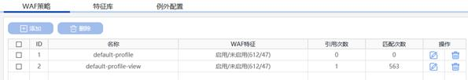
点击添加按钮，可以自定义策略,也可以复制现有的策略；
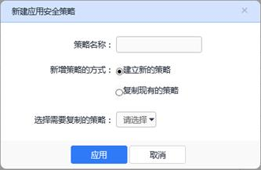
点击操作下方的编辑图标按钮，可以进入各项具体策略的设置页面，根据实际的需要，可启用/不启用各项策略以及编辑各项具体参数。
安全策略——Web安全策略——基本特征库
WAF内置了9种类别400多条的基本特征，管理员可针对这些特征条目进行启用/不启用，转发阻断等一系列操作。
选择“安全策略 > Web安全策略”，对于需要编辑的一条策略，点击编辑按钮，进入“基本特征库”页面，在该页面可以设置特征库中各项规则的动作、是否记录日志、启用状态等，根据不同条件查询具体的某个规则。
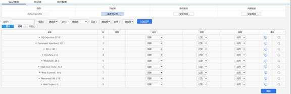
表2-2 WAF特征库操作说明
| 参数 | 说明 |
|---|---|
| 过滤显示 | 输入过滤条件显示需要查看的特征条目。 |
| 动作 | 分为阻断、放行、告警或重定向。 |
| 日志 | 记录、不记录。 |
| 操作 | 左边操作按钮为为该条特征添加例外主机，点击跳转到“添加例外”界面，右边按钮为查看描述，点击查看该条特征的详细描述。 |